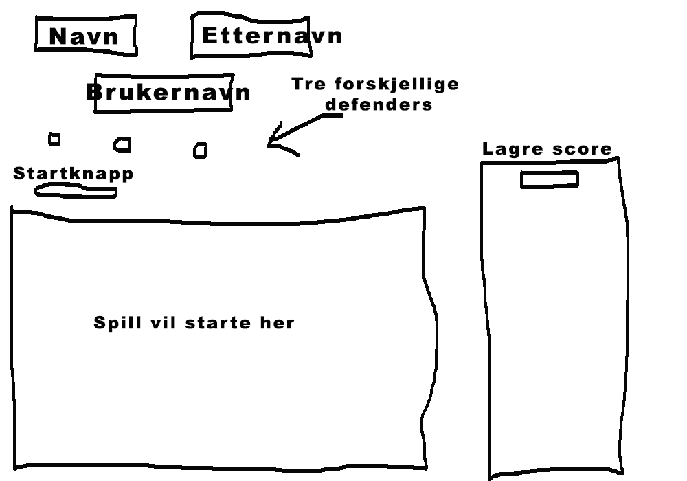

Applikasjonen er et spill hvor du skal score mest mulig poeng
Hensikten med spillet er å bruke piltastene og space for å bevege seg og å skyte fiender for å score poeng ved hjelp av tre forskjellige "defenders": Melee, range og mage. Scoren kan lagres dersom brukeren ønsker det.
Det er slik applikasjonen/spillet vil se ut for brukeren.
Spillet vil bli styrt ved hjelp av høyre piltast(går mot høyre), venstre piltast (går mot venstre), piltast opp(hopper) og space(skyter).
Konvertereren nederst på siden og animasjonen oppe i høyre
er ikke en del av spillet, men er bare der for å dekke litt
flere kompetansemål.
Animasjonen kjører en gang når siden blir refresha, og så hver
gang brukeren trykker på sppace etter at spillet er
startet. Dette ville vært vanskeligere å fått til med css
animasjon.
Konvertereren la jeg til for å vise litt enkle beregninger.
I koden har jeg også lagt til en extension til klassen jeg
opprinnelig hadde for å dekke det målet, selv om den ikke blir
tatt i bruk.
Mangler egentlig ganske mye på spillet, men har fått lagt inn det grunnleggende og føler det dekker det meste av kompetansemålene. Det mangler fiender å skyte, skytefunksjonen, figuren kan ikke miste liv og kan ikke få score(mangler veldig lite for å få til).